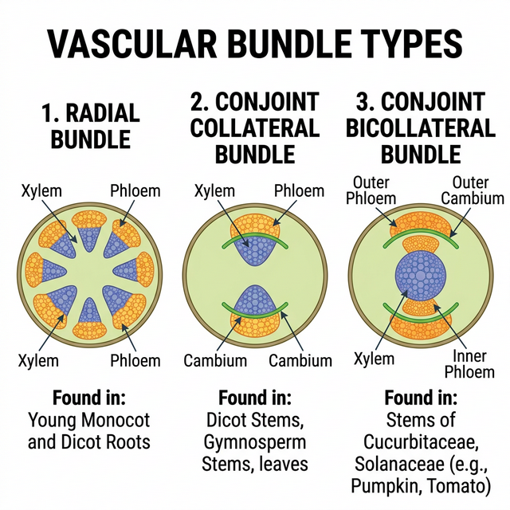

Chapter 6: Anatomy of Flowering Plants
You can very easily see the structural similarities and variations in the external morphology of the larger living organism, both plants and animals. Similarly, if we were to study the internal structure, one also finds several similarities as well as differences. This chapter introduces you to the internal structure and functional organisation of higher plants. Study of internal structure of plants is called anatomy.
The Tissues
A tissue is a group of cells having a common origin and usually performing a common function. A plant is made up of different kinds of tissues. Tissues are classified into two main groups, namely, meristematic and permanent tissues based on whether the cells being formed are capable of dividing or not.
Meristematic Tissues
Growth in plants is largely restricted to specialised regions of active cell division called meristems.
- Apical Meristems: Occur at the tips of roots and shoots and produce primary tissues.
- Intercalary Meristems: Occur between mature tissues (e.g., in grasses).
- Lateral Meristems: Cylindrical meristems that occur in the mature regions of roots and shoots. They are responsible for secondary growth (e.g., fascicular vascular cambium, cork cambium).
Permanent Tissues
The cells of the permanent tissues do not generally divide further. Permanent tissues having all cells similar in structure and function are called simple tissues. Permanent tissues having many different types of cells are called complex tissues.
- Simple Tissues: Parenchyma, Collenchyma, Sclerenchyma.
- Complex Tissues:
- Xylem: Functions as a conducting tissue for water and minerals from roots to the stem and leaves. Composed of tracheids, vessels, xylem fibres and xylem parenchyma.
- Phloem: Transports food materials, usually from leaves to other parts of the plant. Composed of sieve tube elements, companion cells, phloem parenchyma and phloem fibres.
The Tissue System
We can classify the tissue systems into three types on the basis of their structure and location:
- Epidermal Tissue System: Includes the epidermis, stomata, and epidermal appendages (trichomes and hairs).
- Ground Tissue System: All tissues except epidermis and vascular bundles constitute the ground tissue. It consists of simple tissues such as parenchyma, collenchyma and sclerenchyma.
- Vascular Tissue System: Consists of complex tissues, the phloem and the xylem. The xylem and phloem forms together constitute vascular bundles.

Figure 6.1: Different types of vascular bundles
Anatomy of Dicotyledonous and Monocotyledonous Plants
For a better understanding of tissue organisation of roots, stems and leaves, it is convenient to study the transverse sections of the mature zones of these organs.
- Dicot Root vs Monocot Root: Dicot roots have fewer xylem bundles (usually 2-6) and a very small or inconspicuous pith. Monocot roots usually have polyarch xylem (>6 bundles) and a large, well-developed pith.
- Dicot Stem vs Monocot Stem: Dicot stems have vascular bundles arranged in a ring, which are ‘open’ (cambium present). Monocot stems have scattered vascular bundles, which are ‘closed’ (cambium absent) and surrounded by a sclerenchymatous bundle sheath.
- Dorsiventral (Dicot) Leaf vs Isobilateral (Monocot) Leaf: Dicot leaves have differentiated mesophyll (palisade and spongy) and stomata primarily on the lower epidermis. Monocot leaves have undifferentiated mesophyll and stomata on both surfaces. Monocots also have large, empty bulliform cells on the upper epidermis.
Competency Based Questions (Previous Years & Sample Papers)
Q1. The flow of water through the xylem vessels is described by the Hagen-Poiseuille equation for fluid dynamics in a pipe: $J_v = \frac{\pi r^4}{8\eta \Delta x} \Delta P$, where $J_v$ is the volumetric flow rate, $r$ is the radius of the vessel, $\eta$ is fluid viscosity, $\Delta P$ is the pressure difference, and $\Delta x$ is the distance. If a genetic mutation causes a plant’s xylem vessels to develop with a radius that is exactly half ($1/2$) of the normal radius $r$, by what factor will the volumetric flow rate $J_v$ decrease, assuming all other variables remain constant? Justify your mathematical output biologically.
Answer
Let the original flow rate be $J_1$: $$ J_1 = C \cdot r^4 $$ (where $C = \frac{\pi \Delta P}{8 \eta \Delta x}$ is a constant)
The new radius is $r_2 = \frac{1}{2}r$. The new flow rate $J_2$ is: $$ J_2 = C \cdot \left(\frac{1}{2}r\right)^4 $$ $$ J_2 = C \cdot \left(\frac{1}{16}r^4\right) $$ $$ J_2 = \frac{1}{16} \cdot (C \cdot r^4) $$ $$ J_2 = \frac{1}{16} J_1 $$
The volumetric flow rate decreases by a factor of 16.
Biological Justification: The Hagen-Poiseuille equation shows that flow rate is proportional to the fourth power of the radius. Biologically, this means that the width of the conducting elements (xylem vessels and tracheids) is the single most critical factor in a plant’s ability to transport water. Even a slight reduction in vessel diameter drastically restricts water flow due to increased friction against the vessel walls. This is why plants in dry environments (where cavitation and air embolisms are risks) often evolve narrower, but safer, tracheary elements, trading high flow capacity for structural integrity under high negative pressure.
Q2. During a microscopy lab, an anatomy student observes a transverse section (T.S.) of a young dicot stem. She counts 8 vascular bundles arranged in a regular ring. An hour later, she observes a T.S. of a monocot stem of similar age and notes 45 randomly scattered vascular bundles. Based on your knowledge of plant tissue systems, explain why the arrangement of vascular tissues inherently prevents secondary growth in the monocot stem, regardless of the number of bundles present.
Answer
The inability of monocot stems to undergo significant secondary growth is fundamentally due to the nature and arrangement of their vascular bundles.
- “Closed” Vascular Bundles: In monocots, the vascular bundles are described as ‘closed’, meaning they lack fascicular vascular cambium (a lateral meristem) between the xylem and phloem. The cambium is required to generate secondary xylem (wood) and secondary phloem.
- Scattered Arrangement: The scattered distribution of the bundles in the ground tissue prevents the formation of a continuous, functional ring of cambium (interfascicular cambium). In dicotyedons, the ring arrangement of ‘open’ bundles allows the fascicular cambial strips to join with interfascicular cambium to form a complete, continuous ring capable of dividing laterally to increase girth.
Therefore, because monocot bundles lack their own cambium and are geometrically isolated, they cannot produce secondary lateral tissues.
Q3. Bulliform cells are modified epidermal cells in grasses that control leaf rolling during water stress. Suppose a grass leaf maintains a turgor pressure $P_t = 0.8 MPa$ well above its threshold $P_{thresh} = 0.3 MPa$, keeping the leaf completely unrolled. When the soil moisture drastically drops, the bulliform cells lose water and their pressure drops according to $P_t = 0.8 - 0.05h$ (where $h$ is hours without water). Calculate the threshold time in hours ($h$) before the leaf begins to roll inwards to conserve water.
Answer
The leaf will begin to roll inwards when its turgor pressure $P_t$ drops to the threshold pressure $P_{thresh}$.
Given: $P_t = 0.8 - 0.05h$ $P_{thresh} = 0.3$
Set $P_t$ equal to $P_{thresh}$ to find the threshold time: $0.8 - 0.05h = 0.3$
Subtract 0.8 from both sides: $-0.05h = 0.3 - 0.8$ $-0.05h = -0.5$
Divide by -0.05: $h = \frac{-0.5}{-0.05}$ $h = \frac{50}{5}$ $h = 10$
The threshold time is 10 hours. After 10 hours of water deprivation, the bulliform cells become flaccid, causing the leaf to roll and minimize its exposed surface area to limit transpirational water loss.